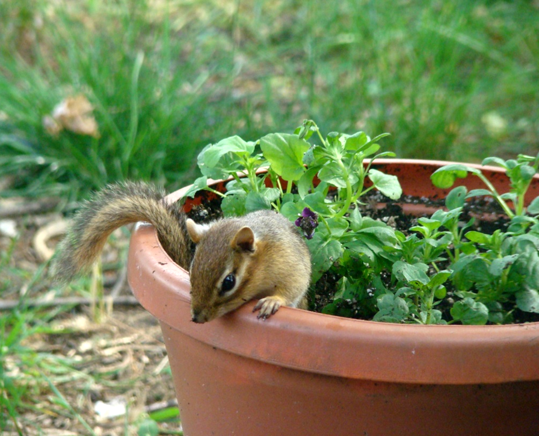

Yes, I know that starlings, grackles, house finches and house sparrows are God’s creatures too, but I do wish they would find somewhere else to raise their families and find food – somewhere other than my backyard! We all know the story of how a British person introduced the starling to Central Park because he or she was homesick for its “song.” I believe the house sparrow and house finch were imported also – all have thrived beyond anyone’s imagination. They take over nesting sites of other birds, gorge themselves at bird feeders, and generally make a nuisance of themselves.
I have seen grackles eating baby wrens that were pulled out of a wren house. Whenever I see a grackle I curse inwardly, though they do eat a lot of insects.
One trick I’ve tried that I’ve mentioned elsewhere is to sprinkle mixed birdseed or cracked corn over the brush pile in my yard. That keeps them busy for a while. In the past I’ve hung a big piece of suet well away from the feeders to try to draw them away. I remember a time when the house sparrows and house finches would eat only the corn and mixed birdseed. They quickly discovered it was less work to crack open much larger sunflower seeds. In fact I’ve seen goldfinches make a transition from Niger seed to sunflower seed most likely for the same reason.
Fox squirrels can be fun to watch. Don’t underestimate their cunning. The only feeder that seems to have thwarted the squirrels is a “Squirrel Buster” I received as a gift. But you have to be careful to place it away from anything the squirrel can hang from (by its toes if necessary) and reach over to gorge from the little seed “ports.” The weight of a squirrel clinging to the outside of the feeder, will close off the ports. Bungee cords for dried corn on cob can be entertaining. Cardinals, woodpeckers and grackles also will cling to it long enough to pull off a kernel.
A gallon jar squirrel feeder or similar diversion will work for a while. They pull off a kernel of corn, bite out the center and drop the rest.

Chipmunks…if you have an invasion of chippies, I’d strongly advise buying or borrowing a proper-sized humane trap. Bait it with peanut butter. Relocate the critters to some far-flung place where they can adapt nicely and not return! One year I took away 14 chipmunks to a new woodsy home.
A chipmunk will perhaps crack a peanut and eat it, but they are hoarders and inclined to stock up their tunneled homes. A chippie will stuff its cheek pouches until they will hold no more and then scoot into one of their tunnel entrances. Not only do they enjoy feeder food, they will dig around in your patio flower pots searching for seeds or perhaps burying some seeds. Their tunnels can undermine your patio!
Try the innovative feeders to discourage the varmints and problem birds and if that doesn’t work, I’d suggest limiting the amount of seeds that you put out at one time. Birds don’t rely totally on your feeding them except perhaps during a hard winter.
I dearly love the families of rabbits that live under my yard barn. I just don’t plant petunias in my patio boxes! And, oh my! I’ve learned they love morning glories.
I once witnessed a bunny and squirrel playing together! You never know what you will see if you watch your backyard from time to time!
